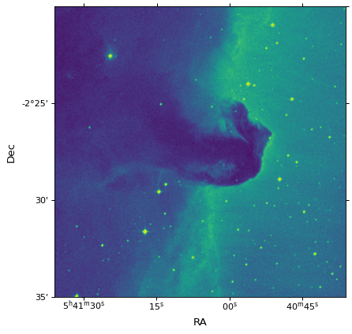

Subsetting and Pixel Scales¶
WCS objects can be broken apart into their constituent axes using the
sub function. There is also a celestial
convenience function that will return a WCS object with only the celestial axes
included.
The pixel scales of a celestial image or the pixel dimensions of a non-celestial
image can be extracted with the utility functions
proj_plane_pixel_scales and
non_celestial_pixel_scales. Likewise, celestial pixel
area can be extracted with the utility function
proj_plane_pixel_area.
Matplotlib plots with correct WCS projection¶
The WCSAxes framework, previously a standalone package, allows
the WCS to be used to define projections in Matplotlib.
More information on using WCSAxes can be found here.
import warnings
from matplotlib import pyplot as plt
from astropy.io import fits
from astropy.wcs import WCS, FITSFixedWarning
from astropy.utils.data import get_pkg_data_filename
filename = get_pkg_data_filename('tutorials/FITS-images/HorseHead.fits')
hdu = fits.open(filename)[0]
with warnings.catch_warnings():
# Ignore a warning on using DATE-OBS in place of MJD-OBS
warnings.filterwarnings('ignore', message="'datfix' made the change",
category=FITSFixedWarning)
wcs = WCS(hdu.header)
fig = plt.figure()
fig.add_subplot(111, projection=wcs)
plt.imshow(hdu.data, origin='lower', cmap=plt.cm.viridis)
plt.xlabel('RA')
plt.ylabel('Dec')
{kind=link}
{kind=link}
